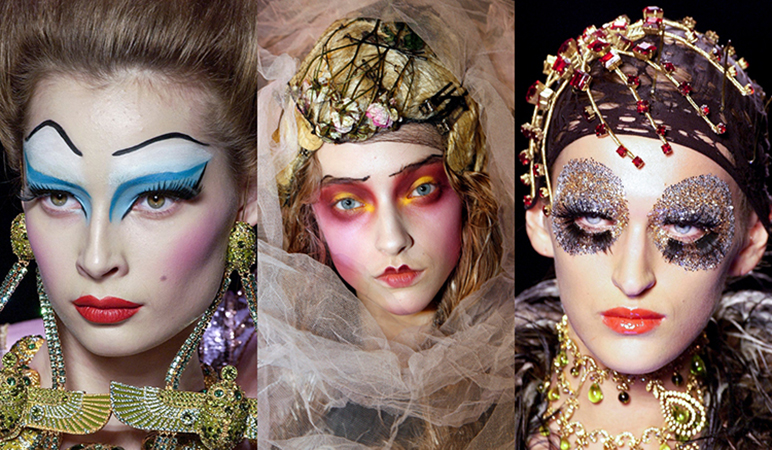
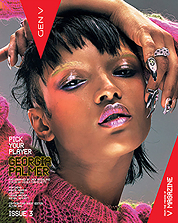
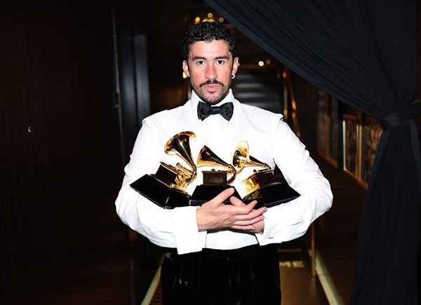

As a Makeup Artist, I am heavily inspired by Pat McGrath.
She has been in the industry for over 25 years creating influential iconic makeup looks on the runway.
I love her use of material and colors. She uses avant-garde techniques to transform makeup into a high art form while complimenting the fashion she is working with.
I've learned many techniques from watching her apply makeup. She doesn't just enhance the face with cosmetics but instead uses the canvas to display unique artistry.
She inspires me to embrace my individuality instead of following trends and I hope to bring that creativity to my designs.

Nicola is a fashion designer, creative director, stylist, and editor best known for collaborating extensively with Lady Gaga. I first
learned about Nicola through Lady Gaga's "meat dress", ever since I've been a fan inspired by his unforgettable style. What I love the most
is his ability to break boundaries. I love his innovative transformations and story telling through fashion, cosmetics, and digital editing. He has just been appointed
the Global Creative Director of MAC Cosmetics, one of my favorite cosmetic brands, and I am so excited to see how he takes an iconic beauty brand and
reimagines it for the newer generation. This artist inspires me to experiment with different platforms and technologies, while incorporating my culture and originality.

Bad bunny has be an artist that I have been drawn to because of the way he breaks boundaries and uses his platform to express his identity
and culture. What I love about bad bunny is that he treats his work like a creative experience. As a latin man, I enjoy the way he challenges
masculinity and style in the Latin Music industry. What stands out to me is his ability to amplify his artistry by collaborate with different
artists, designers, and brands. His album covers, music videos, and stage designs are visually creative. He inspires me and reminds me that self expression
is powerful. I've learned from him that it's important to stay authentic but allow your self to evolve. He motivates me to be bold, take risks, and express my truest self.